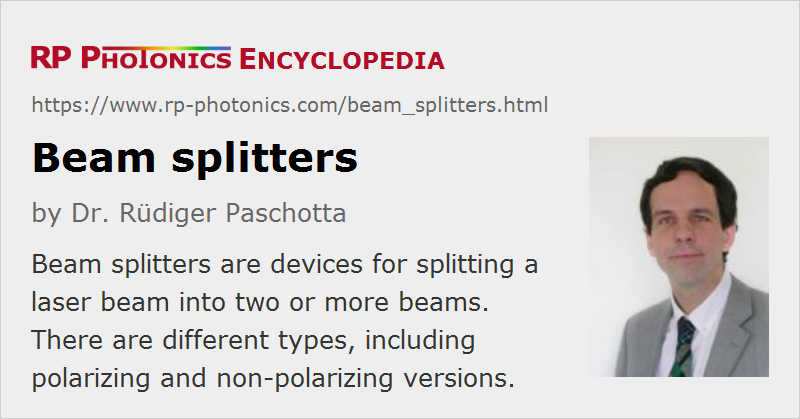

Beam Splitters
Definition: devices for splitting a laser beam into two or more beams
Alternative terms: beamsplitters, power splitters
Opposite term: beam combiners
German: Strahlteiler
How to cite the article; suggest additional literature
Author: Dr. Rüdiger Paschotta
A beam splitter (or beamsplitter, power splitter) is an optical device which can split an incident light beam (e.g. a laser beam) into two (or sometimes more) beams, which may or may not have the same optical power (radiant flux).
Different types of beam splitters exist, as described in the following; the most important ones are plate and cube beam splitters. They are used for very different purposes. For example, beam splitters are required for various interferometers, autocorrelators, photo cameras, projectors and laser systems. The wide range of applications implies widely varying requirements, which can be fulfilled with different types of splitters.
Important Properties
Apart from the characteristics concerning the basic function of a beam splitter – the splitting ratio – other properties of beam splitters can be important in applications:
- Some beam splitters are polarizing, others are non-polarizing. There are also devices designed for use with only one polarization direction – for example, with a laser beam as the input, which is in most cases linearly polarized.
- While some devices work only in a narrow wavelength region (e.g. around a common laser line), others are designed for broadband operation, e.g. working throughout the whole visible wavelength region. Similarly, beam splitters may operate properly only with a finite range of incidence angles.
- The optical losses vary significantly between different types of devices. For example, beam splitters with metallic coatings exhibit relatively high losses, whereas devices with dichroic coatings may have negligible losses: the total output power nearly equals the input power.
- The losses may also be related to the damage threshold, which can be important particularly for use with Q-switched lasers.
- The spatial configuration can be important for applications. Some require the output ports to be at 0° and 90° relative to the input beam (possibly without any beam offset of the transmitted beam), while others require two parallel outputs or some other configuration.
- For bulk-optical devices, a large open aperture is sometimes needed.
Plate Beam Splitters Based on Dielectric Mirrors
Any partially reflecting mirror can be used for splitting light beams. In laser technology, dielectric mirrors are often used for such purposes, and they are called plate beam splitters to distinguish them from cube beam splitters (see below). The angle of incidence may be 45° (as in Figure 1), leading to a 90° deflection of one of the output beams, as is often convenient. However, one can design such beam splitters for other deflection angles; they will usually work only for a limited range of angles. A wide range of power splitting ratios can be achieved via different designs of the dielectric coating.
The transmitted beam always experiences an offset (spatial shift), the magnitude of which depends of the thickness and the refractive index of the substrate. This is a problem for some applications.
For infrared applications (e.g. infrared spectroscopy), the absorption of the substrate is often a limiting factor. One often uses beam splitters with calcium fluoride (CaF2) substrates for wavelengths up to 8 μm. KBr-based beam splitters with a germanium-based coating can be used up to 25 μm wavelength, but that material is hygroscopic and must therefore be carefully protected against moisture. For the far infrared, polymer films are available.
In general, the reflectance of a dichroic mirror depends substantially on the polarization state of the beam. Such a device can even be optimized to function as a thin-film polarizer, where in some wavelength range a beam with a certain polarization can be nearly totally reflected, while a beam with different polarization is largely transmitted. On the other hand, it is also possible to optimize for a minimized polarization dependence to obtain a non-polarizing beam splitter within a limited wavelength range. This is most easily achieved for near normal incidence.
Dielectric beam splitters usually have a strongly wavelength-dependent reflectance. This can be used for dichroic beam splitters (→ dichroic mirrors), which can separate spectral components of a beam. For example, such a device may be used after a frequency doubler for separating the harmonic beam from residual pump light. The separation may occur based on the difference in wavelength or polarization.
A beam splitter as shown in Figure 1 will always lead to a transverse offset of the transmitted beam, which is proportional to the thickness of the used substrate. There are so-called pellicle beam splitters with a very thin substrate, minimizing that beam offset. Note, however, that parasitic reflections from the back side (which occur even if that side is anti-reflection coated) may lead to disturbing interferences, and therefore it is often better to use some larger thickness, so that the two reflections are spatially well separated.
Beam Splitter Cubes
Many beam splitters have the form of a cube, where the beam separation occurs at an interface within the cube (Figure 2). Such a cube is often made of two triangular glass prisms which are glued together with some transparent resin or cement. The thickness of that layer can be used to adjust the power splitting ratio for a given wavelength. One may also use some dielectric multilayer coating or a thin metal coating on one or both of the prisms to modify the optical properties, e.g. in terms of operation bandwidth or polarizing properties.
As the interface between the prisms is typically very thin, there is only a minimal transverse offset of the transmitted beam. For some applications, this is advantageous, possibly a reason not to use a partially transparent mirror at 45° as shown in Figure 1.
Beam splitter cubes can be used not only for simple light beams, but also for beams carrying images, e.g. in various types of cameras and projectors.
Generally, cube beam splitters cannot tolerate a high optical powers as plate beam splitters, although optically contacted cubes can also exhibits substantial power handling capabilities. Concerning durability and handling, cube beam splitters are often preferred over plates.
Non-polarizing Beam Splitter Cubes
Non-polarizing beam splitter cubes can be made by refining the design, normally via a multilayer coating between the prisms. The substantial angle of incidence will naturally introduce a substantial polarization dependence, but there are certain design principles which can be used to minimize such effects at least within some limited optical bandwidth.
Note that “non-polarizing” usually does not imply that such a cube is polarization-preserving. For example, if an input beam is polarized at 45° against the axis, it can generally not be expected that the output beam is still linearly polarized, since the two polarization components will in general have different phase delays, apart from somewhat different amplitudes.
Polarizing Beam Splitter Cubes
Instead of glass, crystalline media can be used, which can be birefringent. This allows the construction of various types of polarizing beam splitter cubes (polarizers) such as Wollaston prisms and Nomarski prisms, where the two output beams emerge from the same face, and the angle between these beams is typically between 15° and 45°, i.e., much smaller than shown in Figure 2. Other types are the Glan–Thompson prism, and the Nicol prism, the latter having a rhombohedral form (i.e., not that of a cube).
Beam Splitters with Geometric Splitting
It is also possible to split beams geometrically (aperture splitting), e.g. by inserting a highly reflecting mirror only partially into a light beam, so that some part of the light can pass. One may also use other means, such as pattern of reflecting stripes or dots on a glass surface. A common design with dots is the Polka dot plate beamsplitter.
Ad advantage over dichroic beam splitters is the small wavelength dependence of the splitting ratio. The resulting modification of the intensity profile can be tolerated in some applications (but generally not for imaging).
Beam Splitters with Multiple Outputs
While most beam splitters have only two output ports, there are also beam splitters with multiple outputs. They may be realized, for example, based on diffractive optics. Another option is to use multiple cascaded beam splitters.
There are devices which produce some number of output beams of quite similar optical powers with a certain spatial pattern (e.g. all in one row, four at the edges of a square, etc.).
Fiber-optic Beam Splitters
Various types of fiber couplers can be used as fiber-optic beam splitters. Such a device can be made by fusion-combining fibers, and may have two or more output ports. As for bulk devices, the splitting ratio may or may not strongly depend on the wavelength and polarization of the input.
Fiber-optic splitters are required for fiber-optic interferometers, as used e.g. for optical coherence tomography. Splitters with many outputs are required for the distribution of data from a single source to many subscribers in a fiber-optic network, e.g. for cable-TV.
Other Types
Other types of beam splitters are:
- metal-coated mirrors (e.g. half-silvered mirrors), where the metallic coating is made thin enough to obtain partial reflectance
- pellicles, which are thin membranes, sometimes used in cameras
- micro-optic beam splitters, often used for generating multiple output beams
- waveguide beam splitters, used in photonic integrated circuits
Beam Splitters in Quantum Optics
In quantum optics, a beam splitter cannot be regarded as a device where the optical amplitudes at the outputs are simply given by constant factors times the input amplitude. This is essentially because there is always a second input port; even if that port remains unused, it must be considered as an input for vacuum fluctuations of the optical field. In a semi-classical picture, one can consider those vacuum fluctuations to influence the output beams, adding intensity noise and phase noise to the outputs. In a photon picture, one can see the amplitude noise in the form of partition noise – noise which results from the random “decisions” of the device to send an input photon to one output or the other one. This is also related to the fact that the shot noise level of the outputs, measured relative to the average powers (→ relative intensity noise), is increased. Similar effects occur for other types of linear attenuation of optical beams, e.g. by partial absorption.
Combining Beams
Any beam splitter may in principle also be used for combining beams to a single beam. This can be considered as operation with the reversed direction of time. However, the output power is then not necessarily the sum of input powers, and may strongly depend on details like tiny path length differences, since interference occurs. Such effects can of course not occur e.g. when the different beams have different wavelengths or polarization.
See the article on beam combining for more details.
Suppliers
The RP Photonics Buyer's Guide contains 151 suppliers for beam splitters. Among them:
Questions and Comments from Users
Here you can submit questions and comments. As far as they get accepted by the author, they will appear above this paragraph together with the author’s answer. The author will decide on acceptance based on certain criteria. Essentially, the issue must be of sufficiently broad interest.
Please do not enter personal data here; we would otherwise delete it soon. (See also our privacy declaration.) If you wish to receive personal feedback or consultancy from the author, please contact him e.g. via e-mail.
By submitting the information, you give your consent to the potential publication of your inputs on our website according to our rules. (If you later retract your consent, we will delete those inputs.) As your inputs are first reviewed by the author, they may be published with some delay.
Bibliography
| [1] | M. Gilo, “Design of a nonpolarizing beam splitter inside a glass cube”, Appl. Opt. 31 (25), 5345 (1992), doi:10.1364/AO.31.005345 |
| [2] | M. D. Turner et al., “Miniature chiral beamsplitter based on gyroid photonic crystals”, Nature Photon. 7, 801 (2013), doi:10.1038/nphoton.2013.233 |
See also: polarizers, thin-film polarizers, dielectric mirrors, dichroic mirrors, metal-coated mirrors, interferometers, autocorrelators, beam combining
and other articles in the category general optics
|  |
If you like this page, please share the link with your friends and colleagues, e.g. via social media:
These sharing buttons are implemented in a privacy-friendly way!